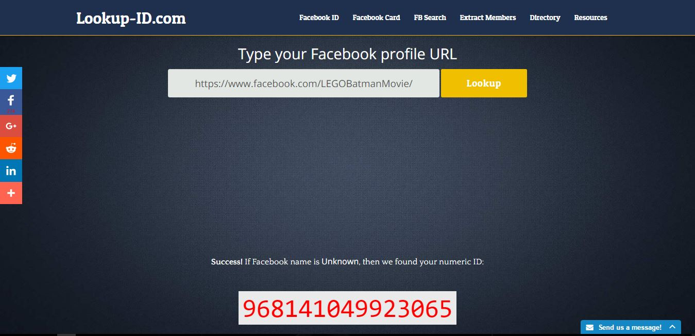

Scraping Facebook with Netvizz API
Customer engagement is a key driver in the success of any product or service. Social media enables customer engagement and Facebook is one such platform. To measure the effectiveness of customer engagement, one must try to listen to what end users have to say (also termed as social listening).
Netvizz is a Facebook tool that can be used to scrape comments and posts, which can be used to text mine and generate valuable insights. The application allows us to export data in standard file formats. The limitation to this approach is that the app works for pages and public groups only.
Here is a step by step guide
Step 1: Search the bar
Go to Facebook search bar and type ‘Netvizz’. The app home page opens with various moule information.
Step 2: Select a Module
For the purpose of demonstration, I have selected 'The Lego Batman Movie's page. Page selection module calls for page id.
The page id can be accessed from the link provided. The link redirects to https://lookup-id.com/, takes page url as the input.
Step 3: Select data types & extract
Select any number of posts for data scope. You can also get top comments or the entire post with comments. Submit request and let it brew!
This can take quite time for some pages depending on the granularity of selection and the length of pages.
Conclusion
In this case, there were only 372 posts and 480540 users liking and commenting posts. The output comes as a zip archive of fans per country, full statistics, comments with users and their corresponding posts, stats per day and .gdf file which can be used to conduct social network analysis as done in this post (Sentiment analysis using R - Lego Batman Movie).